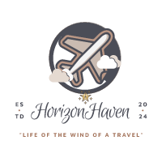

Overview
Purpose
The purpose of this site is to share my travel experiences, tips, and guides with fellow travel enthusiasts. It aims to provide valuable insights and inspiration for planning memorable trips.
Audience
The intended audience is travel enthusiasts, both seasoned travelers and those planning their first trips, who are looking for destination ideas, travel tips, and personal travel stories.
Dynamic elements
1. Random Travel Tip Generator: A function that displays a random travel tip each time the page is loaded.
2. Search and Filter: A search bar and filter options that allow users to find blog posts based on destination, category, or date.
3. Interactive Map: An embedded map that allows users to click on different countries to see travel blog posts related to that country.
Branding
Website Logo
Style Guide
Color Palette
Palette URL: https://coolors.co/bdd358-efa00b-db324d-ffffff| Primary | Secondary | Accent 1 | Accent 2 |
|---|---|---|---|
| [#DB324D] | [#EFA00B] | [#BDD358] | [White] |
Typography
Heading Font: [IM Fell French Canon SC]
Paragraph Font: [Lato, Helvetica, sans-serif]
Normal paragraph example
IM Fell French Canon SC exudes an air of historical sophistication, ideal for projects that require a classical touch, such as book design and formal invitations. In contrast, Lato offers a modern and friendly appeal with its semi-rounded details, making it versatile for both digital and print media, from websites to corporate branding. Helvetica stands out with its clean and neutral design, embodying the essence of versatile sans-serif fonts; it is widely used in advertising, signage, and logos for its professional and timeless appearance. Overall, these typefaces bring unique qualities to any design, allowing for a wide range of creative possibilities tailored to specific project needs.
Colored paragraph example
This paragraph uses a vibrant color palette from Coolors to create an engaging visual effect. The text is colored a bright red (#DB324D), which immediately draws attention. The background of the paragraph is a soft green (#BDD358), providing a pleasant and calming contrast to the red text. To add an additional layer of interest, a vibrant orange border (#EFA00B) is applied to the left side of the paragraph, making it stand out even more. All of this is set against a clean, white background (#FFFFFF), ensuring that the colors pop and the text remains highly readable. This combination of colors and design elements creates a visually appealing and dynamic paragraph that captures the reader's attention.
Navigation
Content
Home page
The HorizonHaven homepage captivates visitors with its visually stunning layout, immediately immersing them in the world of travel through a combination of dynamic travel tips, an interactive map, and easy access to recent blog posts. The page features a prominent logo and intuitive navigation menu, a hero section with striking visuals and a welcoming message, and a grid layout showcasing a selection of popular blog posts with enticing titles, images, and descriptions. Additionally, the interactive map allows users to click on different countries to view related blog posts, while the footer provides social media links, contact information, and a newsletter signup, all designed to inspire and inform travel enthusiasts.
[Page 2]
The HorizonHaven homepage is a vibrant and dynamic portal that immerses visitors in the excitement of travel from the moment they arrive. At the top, a sleek header with the HorizonHaven logo and an intuitive navigation menu guides users to key sections like Home, Blog, About, and Contact. The hero section captures attention with a breathtaking background image or video featuring scenic landscapes or captivating travel moments, accompanied by a warm welcome message that invites visitors to embark on their travel journey through the site. A standout feature of the homepage is the Random Travel Tip Generator, which offers fresh and practical travel advice each time the page is loaded. This dynamic element keeps the content engaging and provides visitors with valuable insights for their adventures. The Featured Blog Posts section showcases a curated selection of recent or popular articles in a visually appealing grid layout. Each post includes a captivating title, an eye-catching image, and a brief description, enticing readers to dive deeper into the travel stories and tips shared by HorizonHaven. An Interactive Map serves as a central hub for exploring travel destinations. This map allows users to click on different countries, revealing related blog posts through a sidebar or popup that displays titles and snippets of content specific to the selected region. At the bottom of the page, the footer ties everything together with links to HorizonHaven’s social media profiles, encouraging visitors to connect and engage with the community. Contact information and a newsletter signup form further enhance the user experience, ensuring that visitors can easily stay updated with the latest posts and travel tips.
Wireframes
Create two wireframes for your site. One for each page and list them here:
Home

The home page wireframe includes a header with the site logo and navigation menu, a hero section with a large background image, an overlaying welcome message, and a call-to-action button, followed by a section showcasing featured travel destinations with images and brief descriptions, a dynamic Random Travel Tip Generator, and a footer containing social media links, a newsletter subscription form, and additional site links. The second page, an Interactive Map page, features a similar header, an interactive map as the main feature where users can click on regions to learn more about destinations, search and filter functionality, a travel tip sidebar with dynamically updating tips, and a consistent footer with social media links, newsletter subscription, and additional site links.
[Page 2]
[Any additional details about page 2 that the wireframe does not make clear]